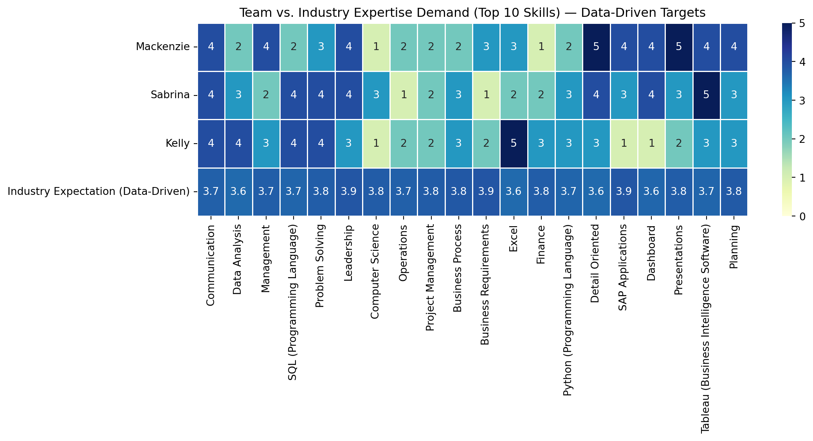

Compare the skills required in IT job postings against the actual skills of group members to identify knowledge gaps and areas for improvement.
Author
Affiliation
Kelly, Sabrina, Makenzie
Boston University
1 Loading Libraries and Data
from pyspark.sql import SparkSessionimport pandas as pdimport matplotlib.pyplot as pltraw_df = pd.read_csv("data/lightcast_job_postings.csv")#raw_df.columns.tolist()
/var/folders/mw/hvx6c2015337qp08y2pvrxm80000gn/T/ipykernel_64671/1289692877.py:5: DtypeWarning:
Columns (19,30) have mixed types. Specify dtype option on import or set low_memory=False.
/var/folders/mw/hvx6c2015337qp08y2pvrxm80000gn/T/ipykernel_64671/2470702404.py:9: FutureWarning:
A value is trying to be set on a copy of a DataFrame or Series through chained assignment using an inplace method.
The behavior will change in pandas 3.0. This inplace method will never work because the intermediate object on which we are setting values always behaves as a copy.
For example, when doing 'df[col].method(value, inplace=True)', try using 'df.method({col: value}, inplace=True)' or df[col] = df[col].method(value) instead, to perform the operation inplace on the original object.
/var/folders/mw/hvx6c2015337qp08y2pvrxm80000gn/T/ipykernel_64671/2470702404.py:10: FutureWarning:
A value is trying to be set on a copy of a DataFrame or Series through chained assignment using an inplace method.
The behavior will change in pandas 3.0. This inplace method will never work because the intermediate object on which we are setting values always behaves as a copy.
For example, when doing 'df[col].method(value, inplace=True)', try using 'df.method({col: value}, inplace=True)' or df[col] = df[col].method(value) instead, to perform the operation inplace on the original object.
/var/folders/mw/hvx6c2015337qp08y2pvrxm80000gn/T/ipykernel_64671/2470702404.py:10: FutureWarning:
Setting an item of incompatible dtype is deprecated and will raise an error in a future version of pandas. Value 'Unknown' has dtype incompatible with float64, please explicitly cast to a compatible dtype first.
3 Create a team-based skill dataframe
Use Scale (1-5) to indicate proficiency levels for each team Member:
1 = Beginner
2 = Basic knowledge
3 = Intermediate
4 = Advanced
5 = Expert
Note: We build the team skill dataframe based on our skills and the most in-demand IT skills and set 1-5 levels for each team member. This allows us to compare side by side in the comparation analysis below.
The team skills levels headmap demostrated we are strogest in communication and problem solving. We also solid in SQL, dashboard /Tableau, and finance. Our weak spots are Computer Science, operations, project management, and writing clear business requiments and process steps.
team_avg = df_skills.mean().sort_values(ascending=False)team_avg.to_frame(name="Team Average (1–5)")
Team Average (1–5)
Communication
4.000000
Tableau (Business Intelligence Software)
4.000000
Detail Oriented
4.000000
Problem Solving
3.666667
Leadership
3.666667
Excel
3.333333
Presentations
3.333333
Planning
3.333333
SQL (Programming Language)
3.333333
Data Analysis
3.000000
Dashboard
3.000000
Management
3.000000
Business Process
2.666667
Python (Programming Language)
2.666667
SAP Applications
2.666667
Project Management
2.000000
Finance
2.000000
Business Requirements
2.000000
Operations
1.666667
Computer Science
1.666667
4 Compare team skills to industry requirements
4.1 Extract the Most In-Demand Skills from IT Job Postings
from collections import Counterimport astimport pandas as pd# Parse SKILLS_NAME into Python listsraw_df["SKILLS_NAME"] = raw_df["SKILLS_NAME"].apply(lambda x: ast.literal_eval(x) ifisinstance(x, str) and x.strip().startswith("[") else (x ifisinstance(x, list) else []))# rename things so similar ones match and stay consistentalias_map = {"SQL": "SQL (Programming Language)","Sql": "SQL (Programming Language)","MS Excel": "Excel","Microsoft Excel": "Excel","PowerBI": "Power BI",}def canon_skill(s: str) ->str: s = s.strip()return alias_map.get(s, s)# 3) Combines and countall_skills = [canon_skill(s) for sublist in raw_df["SKILLS_NAME"] for s in (sublist ifisinstance(sublist, list) else []) ifisinstance(s, str)]skill_counts = Counter([s for s in all_skills if s])# 4) Top Skills top_skills = [skill for skill, _ in skill_counts.most_common(20)]print("Top skills (dataset):", top_skills)
In this section, We built a simple market target for each top skill using what employers write in job postings. First, we joined the job title and description so we could read the text. If a post listed MIN_YEARS_EXPERIENCE, we used it; if not, we pulled numbers like “3+ years” from the text and mapped years to a 1–5 level (with a small bump so “3 years” sits in the middle of a 3–5 range). Next, we read seniority words in the title (junior vs. senior/lead/manager) and skill phrases in the text (basic, intermediate, advanced, expert) and turned those into levels too. For each posting and skill, we combined the three signals, years (50%), seniority (30%), and phrases (20%) to get one score. Finally, we averaged those scores across all postings for each skill to get a 1–5 industry target, which we used to compare with our team’s ratings.
import reimport numpy as np# Build text fields if they exist; otherwise empty stringstitle_col ="TITLE"if"TITLE"in raw_df.columns elseNonebody_col ="BODY"if"BODY"in raw_df.columns elseNonetext_title = raw_df[title_col].astype(str).str.lower() if title_col else""text_body = raw_df[body_col].astype(str).str.lower() if body_col else""text_all = (text_title +" "+ text_body).astype(str).str.strip()# Prefer MIN_YEARS_EXPERIENCE if present; else parse "3+ years" from textmin_col ="MIN_YEARS_EXPERIENCE"if"MIN_YEARS_EXPERIENCE"in raw_df.columns elseNonemin_years = pd.to_numeric(raw_df[min_col], errors="coerce") if min_col else pd.Series(np.nan, index=raw_df.index)def extract_years_from_text(text):ifnotisinstance(text, str): return np.nan m = re.search(r'(\d+)\s*\+?\s*(?:years?|yrs)\s+(?:of\s+)?experience', text, flags=re.I)returnfloat(m.group(1)) if m else np.nanyears_from_text = text_all.apply(extract_years_from_text)years_req = min_years.where(min_years.notna(), years_from_text)def years_to_level_from_min(y):if pd.isna(y): return np.nan y =float(y) base =1if y <1else2if y <2else3if y <4else4if y <6else5returnmin(5, base +0.3) # small bump so "3 years" ≈ mid of typical 3–5years_level = years_req.apply(years_to_level_from_min)def seniority_from_title(t):ifnotisinstance(t, str): return np.nanif re.search(r'\b(intern|junior|jr|entry)\b', t): return2if re.search(r'\b(senior|sr|lead|principal|architect)\b', t): return5if re.search(r'\b(manager|director|head)\b', t): return5return3seniority_level = text_title.apply(seniority_from_title) if title_col else pd.Series(np.nan, index=raw_df.index)PHRASE_LEVELS = [ (r'\b(expert|expertise|mastery|guru)\b', 5), (r'\b(advanced|in-depth|strong|proficient|hands-on|solid)\b', 4), (r'\b(intermediate|working knowledge)\b', 3), (r'\b(basic|knowledge of|familiarity)\b', 2),]def phrase_level(text):ifnotisinstance(text, str): return np.nan lvl = np.nanfor pat, v in PHRASE_LEVELS:if re.search(pat, text): lvl = v if pd.isna(lvl) elsemax(lvl, v)return lvlphrase_level_series = text_all.apply(phrase_level)# Explode one row per (posting, skill), keep only Top 10 skillsexploded = pd.DataFrame({"SKILLS_LIST": raw_df["SKILLS_NAME"],"years_level": years_level,"seniority_level": seniority_level,"phrase_level": phrase_level_series}).explode("SKILLS_LIST")exploded["SKILL"] = exploded["SKILLS_LIST"].astype(str).apply(canon_skill)exploded = exploded[exploded["SKILL"].isin(top_skills)]# Combine signals → expected level per roww_years, w_seniority, w_phrase =0.5, 0.3, 0.2def combine_levels(row): vals, wts = [], []if pd.notna(row["years_level"]): vals.append(row["years_level"]); wts.append(w_years)if pd.notna(row["seniority_level"]): vals.append(row["seniority_level"]); wts.append(w_seniority)if pd.notna(row["phrase_level"]): vals.append(row["phrase_level"]); wts.append(w_phrase)ifnot vals: return3.0returnfloat(np.average(vals, weights=wts))exploded["EXPECTED_LEVEL"] = exploded.apply(combine_levels, axis=1)# Final per-skill target (1–5)expected_per_skill = ( exploded.groupby("SKILL")["EXPECTED_LEVEL"] .mean() .clip(1,5) .round(2) .reindex(top_skills))expected_per_skill.name ="Target (Data-Driven)"expected_per_skill
SKILL
Communication 3.73
Data Analysis 3.60
Management 3.74
SQL (Programming Language) 3.67
Problem Solving 3.75
Leadership 3.85
Computer Science 3.77
Operations 3.73
Project Management 3.77
Business Process 3.84
Business Requirements 3.88
Excel 3.60
Finance 3.76
Python (Programming Language) 3.66
Detail Oriented 3.61
SAP Applications 3.85
Dashboard 3.65
Presentations 3.76
Tableau (Business Intelligence Software) 3.66
Planning 3.80
Name: Target (Data-Driven), dtype: float64
4.3 Team Skills Vs. Industry Requiments
# If df_skills already exists, this will use it; else create a minimal placeholderif"df_skills"notinglobals(): df_skills = pd.DataFrame({"Name": ["Kel","Mak","Maria"],**{s: [2,2,2] for s in top_skills} }).set_index("Name")# Make sure all top_skills are present as numeric 0–5for s in top_skills:if s notin df_skills.columns: df_skills[s] =0df_team_top10 = ( df_skills[top_skills] .apply(pd.to_numeric, errors="coerce") .fillna(0).clip(0,5))# Build comparison frameindustry_expectations_dd = pd.DataFrame( [expected_per_skill.values], index=["Industry Expectation (Data-Driven)"], columns=expected_per_skill.index)comparison_df_dd = pd.concat([df_team_top10, industry_expectations_dd])comparison_df_dd
Communication
Data Analysis
Management
SQL (Programming Language)
Problem Solving
Leadership
Computer Science
Operations
Project Management
Business Process
Business Requirements
Excel
Finance
Python (Programming Language)
Detail Oriented
SAP Applications
Dashboard
Presentations
Tableau (Business Intelligence Software)
Planning
Mackenzie
4.00
2.0
4.00
2.00
3.00
4.00
1.00
2.00
2.00
2.00
3.00
3.0
1.00
2.00
5.00
4.00
4.00
5.00
4.00
4.0
Sabrina
4.00
3.0
2.00
4.00
4.00
4.00
3.00
1.00
2.00
3.00
1.00
2.0
2.00
3.00
4.00
3.00
4.00
3.00
5.00
3.0
Kelly
4.00
4.0
3.00
4.00
4.00
3.00
1.00
2.00
2.00
3.00
2.00
5.0
3.00
3.00
3.00
1.00
1.00
2.00
3.00
3.0
Industry Expectation (Data-Driven)
3.73
3.6
3.74
3.67
3.75
3.85
3.77
3.73
3.77
3.84
3.88
3.6
3.76
3.66
3.61
3.85
3.65
3.76
3.66
3.8
import seaborn as snsimport matplotlib.pyplot as pltplt.figure(figsize=(12, 6))sns.heatmap(comparison_df_dd, annot=True, cmap="YlGnBu", linewidths=0.5, vmin=0, vmax=5)plt.title("Team vs. Industry Expertise Demand (Top 10 Skills) — Data-Driven Targets")plt.yticks(rotation=0)plt.tight_layout()plt.savefig("output/team_vs_Industry_expertise_demand_skills_heatmap.png", dpi=300)plt.show()plt.close()

The team vs. industry headmad compares our skills to the market targets (bottom row). We meet or beat the target in communication and Tableau and are close on problem solving, Excel, and detail-oriented work. We are below the target in computer science, operations, project management, business requirements/process, leadership, finance, Python, and SQL. Our focus should be to raise those areas to about 3.5 or 4 with short courses and practice. Overall, we explain and show insights well, but we need stronger basics and delivery skills to match the market.
The gaps table shows where we sit below the market target. Positive numbers mean we need to improve; negative numbers mean we already meet or beat the target. Our biggest gaps are in computer science, operations, business requirements, project management, and finance. Smaller gaps show up in SAP, business process, and Python. We already match or exceed the market in communication, Tableau, and being detail-oriented.
To set priorities, we adjust each gap by how common the skill is in job postings (market-adjusted priority). Using that, we should first focus on computer science and operations, then business requirements and project management, followed by finance/SAP. This plan lets us close the largest, most market-relevant gaps first while keeping our strengths sharp.
5 Improvement Plan
To improve our IT skills, we can focus on computer science basics, business requirements, project management, and operations. Mackenzie can prioritize computer science, then operations, finance, and project management. Sabrina will focus on project management, business requirements, and operations. Finally, Kelly can focus on computer science, then business requirements, operations, and SAP basics. We can keep our strengths, such as communication, Tableau, SQL, and problem-solving, refreshed with light weekly practice.
Additionally, we could use the following resources to improve our skills: Harvard CS50x for an introduction to computer science (a free course) and LeetCode for practice. For the programming languages SQL and Python, we can use Coursera and DataCamp courses, and LeetCode for programming exercises, which are really helpful for interview practice. For Project Management and operations, we can take the Google Project Management on Coursera. For business requirements, we can take the Managing Requirements for the Business Analysis course on Pluralsight. For finance, we can use Khan Academy’s accounting and financial statements modules. For SAP, we can use SAP Learning’s free fundamentals. For Excel, we can follow Microsoft Learn’s Excel path to reach level 3+.
Finally, we can address our skill gaps with a simple schedule. We can meet weekly or every other week and rotate knowledge guides for each session. If someone is great at project management or another skill, they will share their knowledge and tips. We will work on small, practical projects where we code together, review each other’s work, and discuss what we find. We can keep a shared document and a simple dashboard using a template to track each person’s goals, progress, and next steps for each area that needs improvement. After each session, we will note what we learned, what held us back, and what went well to keep improving.